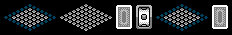

Title: Horror Vacui 2's Mimeoverse Easter Egg
Shaun Inman (an immensely brilliant person, who I have nothing to do with (besides buying everything he makes)) posted a quick recap of his latest creation - Noise Entertainment System / NoiseES for iPhone and iPod Touch (iTunes Link). He tells us that in Horror Vacui 2 (iTunes Link) there is an Easter Egg for Mimeoverse (his unreleased, awesome-looking side-scrolling game). I couldn't find any help on Google as to what the Easter Egg might be, so took a couple minutes to figure it out myself. If you'd like to do it yourself, the secret lies in the source code of the Horror Vacui 2 mini site. You'll need to decode that base64 png mentioned in the code.secret javascript... or just look at the image I created (with some help from this decoder):

Just go into the options of Horror Vacui 2, and select the options in that order. For you non-graphical people, when in the options, tap the small playing board, large playing board, flip draw style, roulette draw style, small playing board, flip draw style (or 2, 1, 4, 3, 2, 4). You'll be graced with four playing styles of Jaunt, Fortress, and King (sorry, all you fans of Under). Anyway, just thought I could share. Enjoy!
Prior: E-Book Tools Next: 20110214